Glenn Bulthuis Official Site
Home
Upcoming
Biography
Music
Videos
Photos
Posters
Contact
X
Posters from the 2020's
Click on a poster for more info...
X
Posters from the 2010's
Click on a poster for more info...
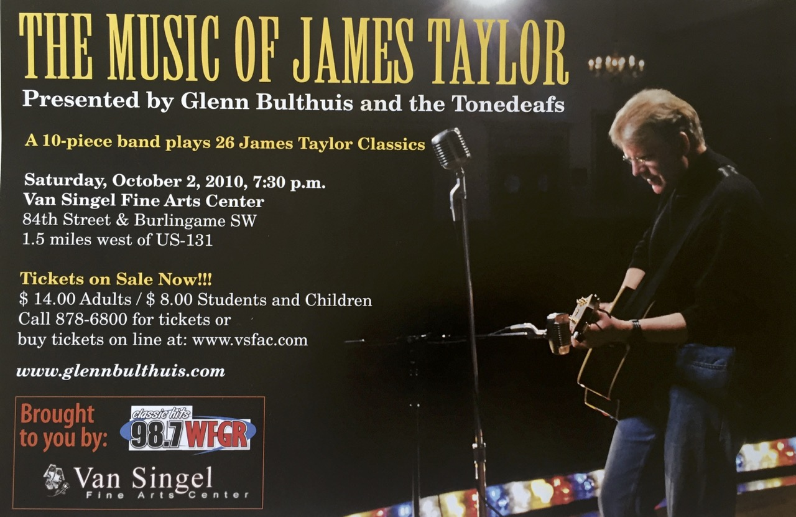
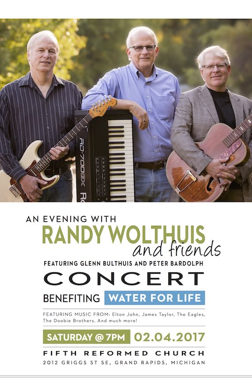 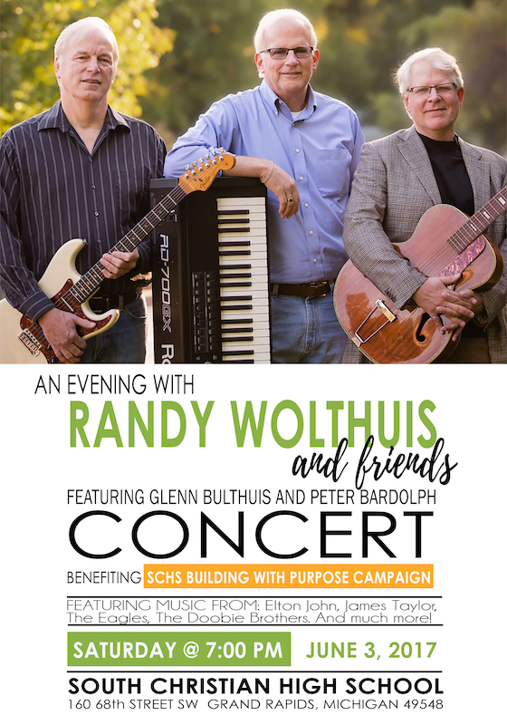
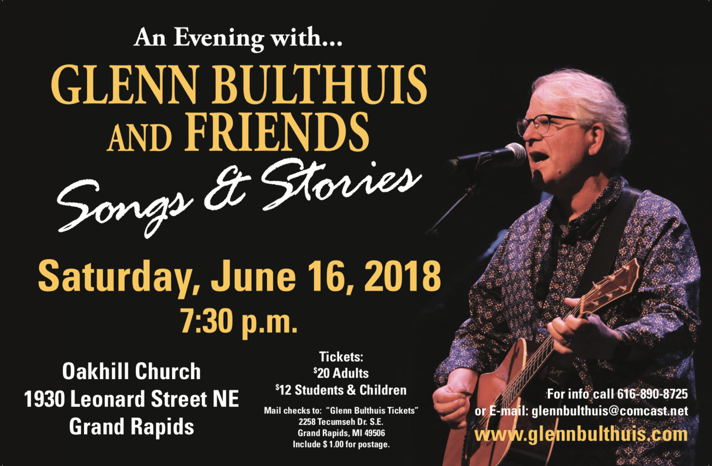 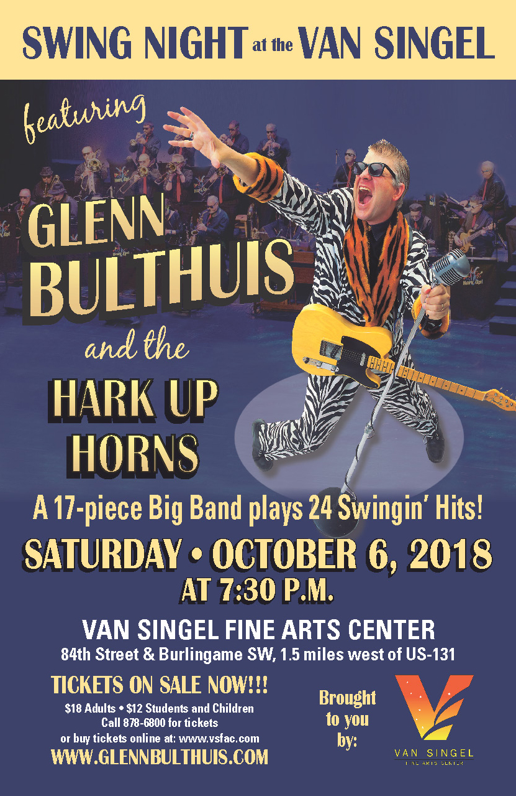 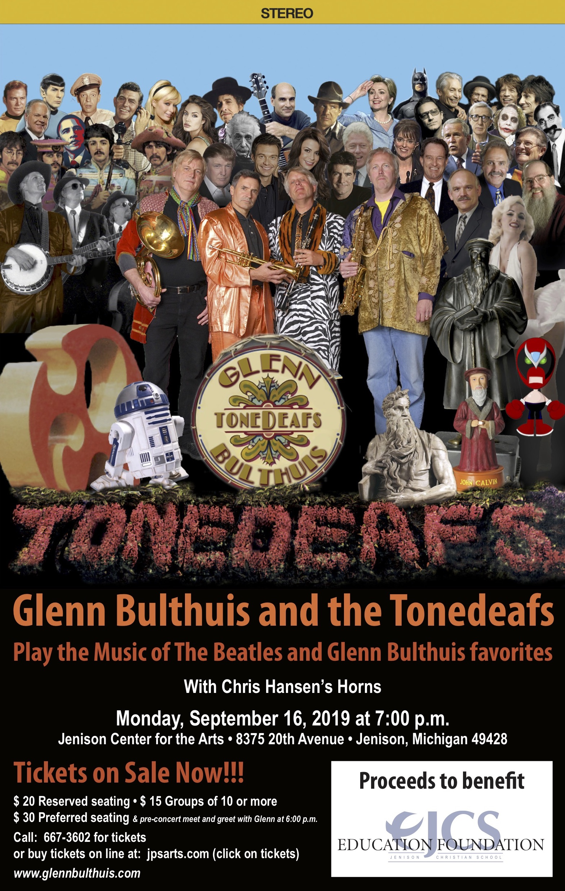
X
Posters from the 2000's
Click on a poster for more info...
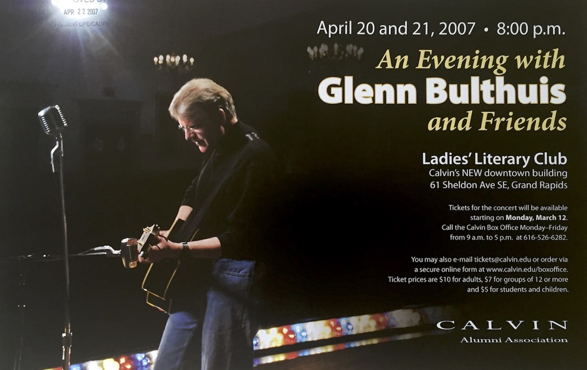
Close
X
Posters from the 90's
Click on a poster for more info...
Close
X
Posters from the 80's
Click on a poster for more info...
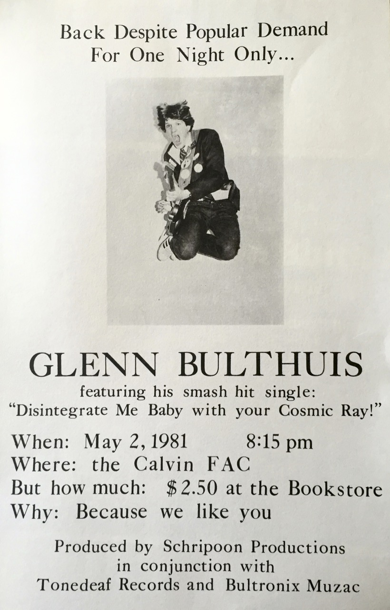
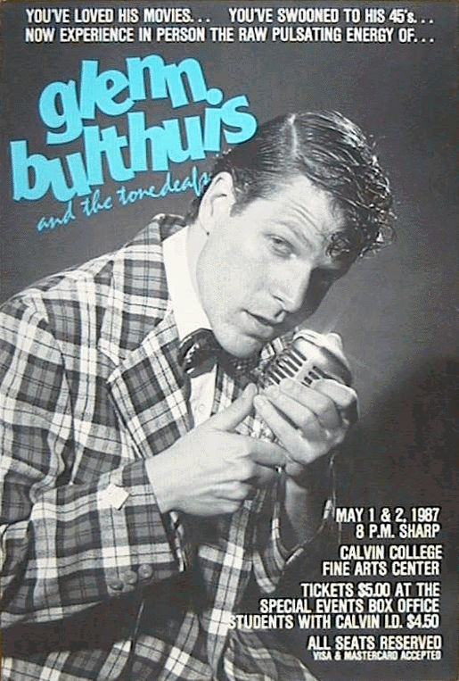
Close
X
Posters from the 70's
Click on a poster for more info...
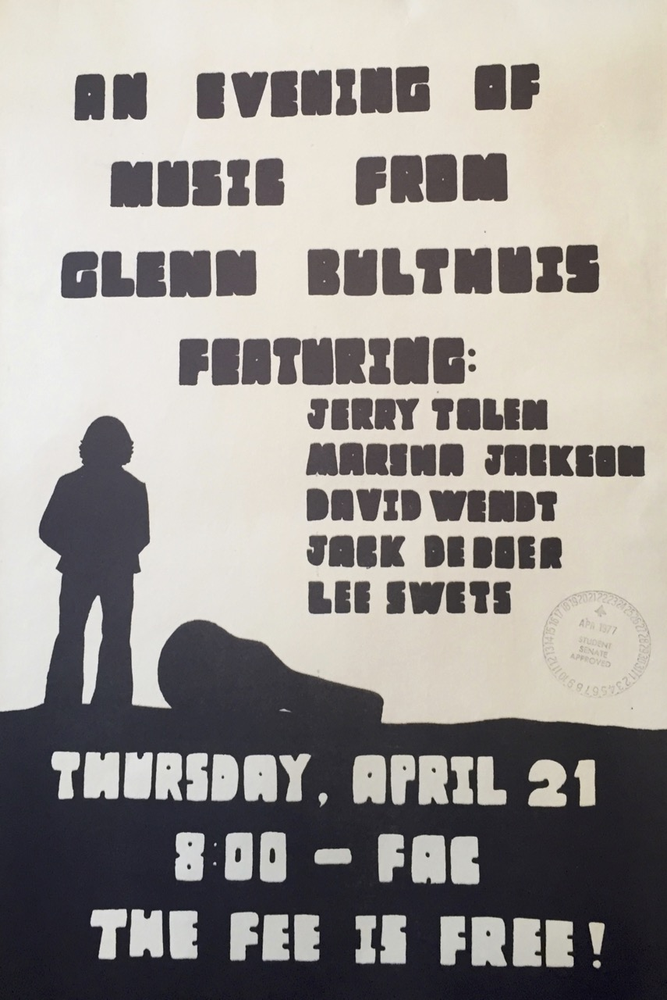 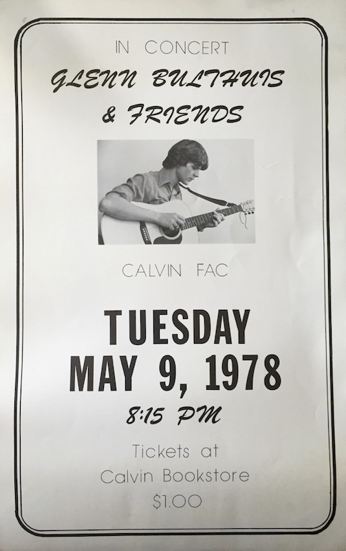 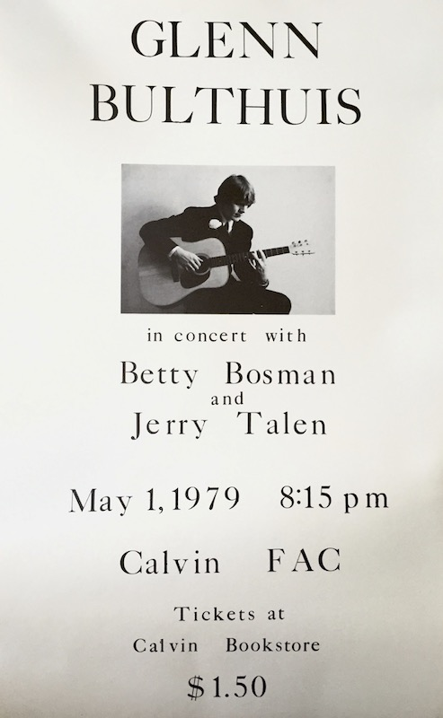
Close
The 2020's
The 2010's
The 2000's
The 90's
The 80's
The 70's


This was the first time it became affordable to go with a full-color poster, and we went with a Bruce Springsteen theme. The show featured a lot of classic rock tunes from the 1980s and 1990s.
Photo by Phil Schaafsma.")


 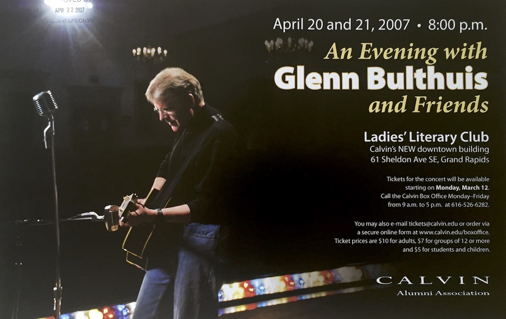
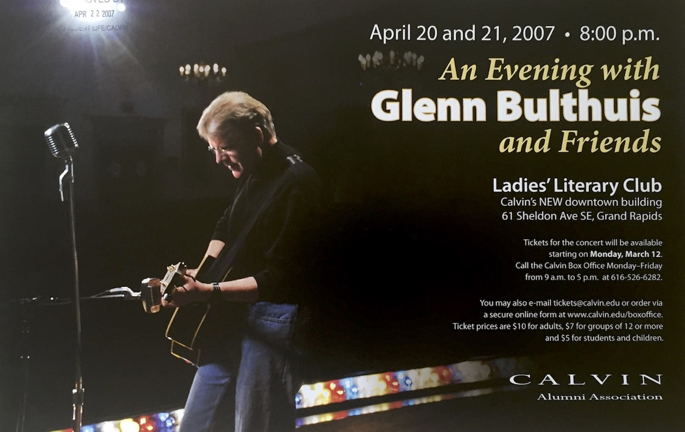

A return to wackiness. With the release of the Tonedeafs 'Greatest Hits' we returned to our wacky ways.")

")


My son, Glenn III, was born in May of 1990, so he got roped into being in the poster.
Photo by Dale Gerling.")

This was a fun photo session in my new Gold Suit. This ended up being my last session with Dale Gerling. He had shot and designed all the posters from 1982-1992.")

This was a takeoff on the Jurassic Park films and features the first Tonedeaf group photo.
Photo by John Corveau.")

The Beatles Anthology had just come out, so we did two Beatle-themed shows. Peter Bardolph lined up all the original Beatle instruments, and I played all the parts.
Photo by John Corveau.")

I don't really know what we were going for, but we had sort of a corny country thing going. The")

I have no idea what this was all about.
Photo by John Corveau.")
 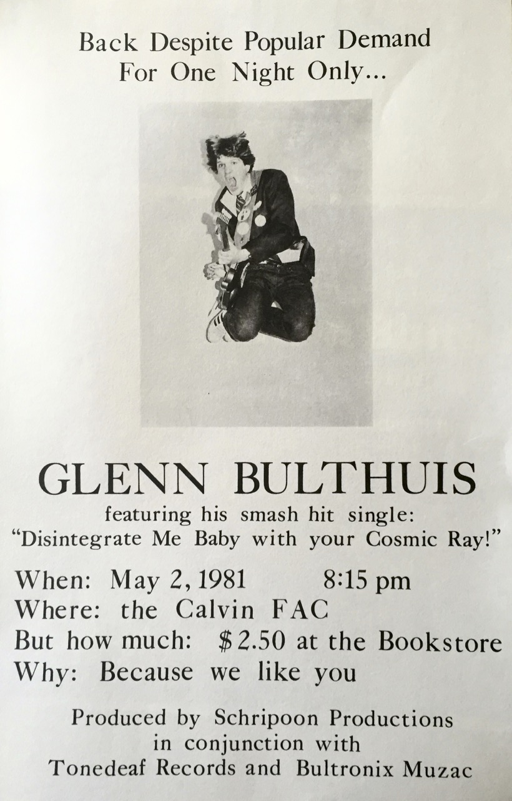
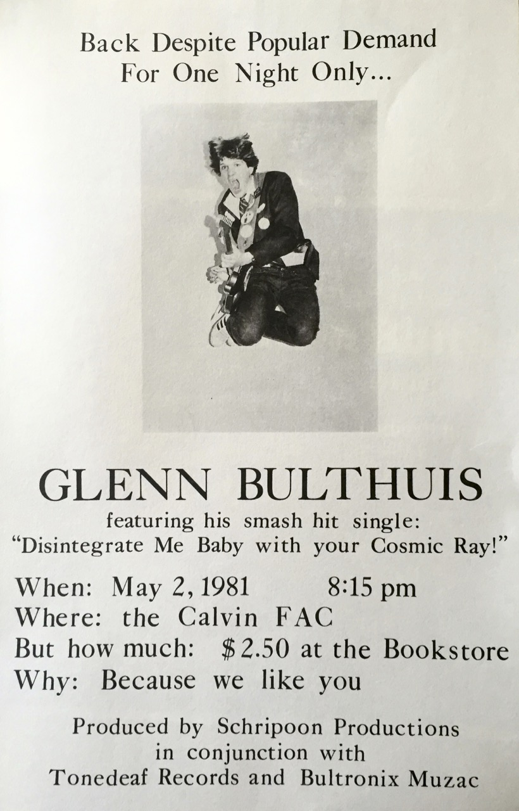


We shot this in an auditorium in Irvine, California. My mom and sister are in the shot.
Photo by Dale Gerling.")


This was a take off on the Indiana Jones film that had just come out. It was a fun show and we had some fun videos.
Photo by Dale Gerling.")

This was a take off on the Rocky films. My dad is wearing the Bulboa shirt. It was our tenth concert at Calvin.
Photo by Dale Gerling.") 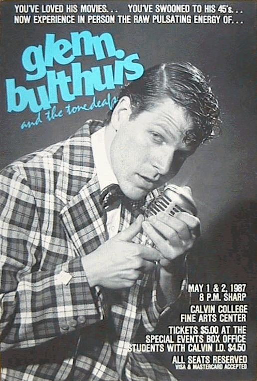
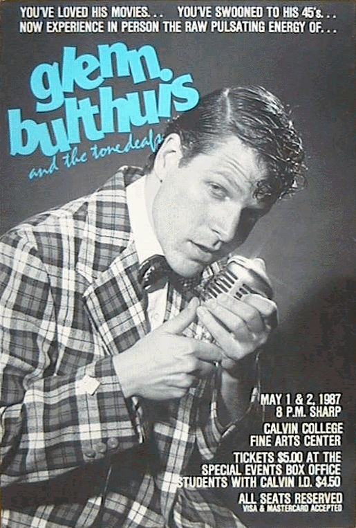

This was a take off on the gangster film 'The Untouchables' that was out at the time, and it features my wife Jana.
Photo by Dale Gerling.")

We shot this in Inglewood, California not far from where I grew up. A new freeway was coming through, so some houses were boarded up. This photo features Dorian Holley (leather jacket), who I grew up with. He was just off a tour with Michael Jackson. Dr. Floyd McGregor (headband) is also a boyhood friend.
Photo by Dale Gerling.")